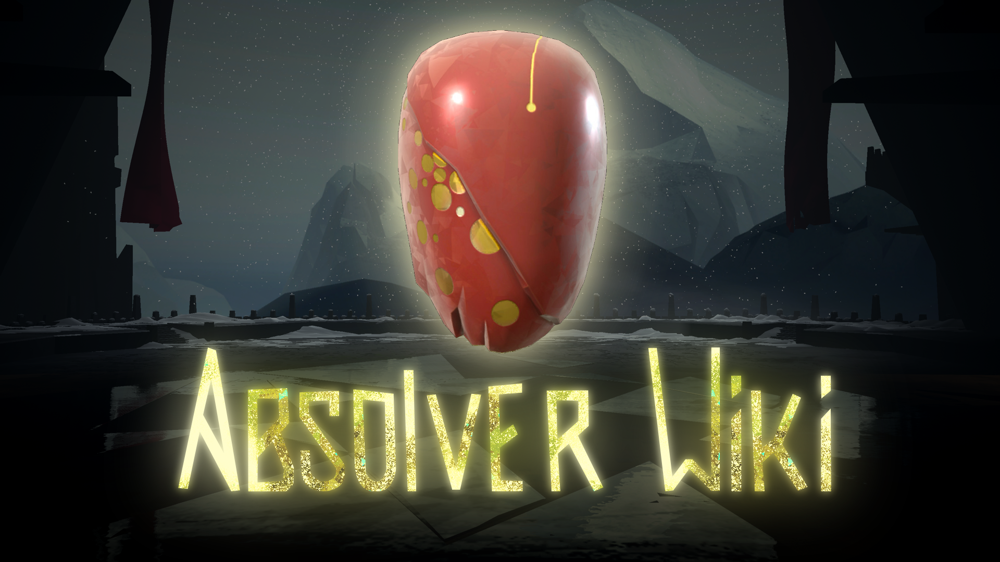

Absolver Wiki DemoTest 2!!!
Скачайте и оцените новую версию Интерфейса Будущей Вики:

DemoTest Absolver Wiki!!!
Скачайте и оцените Интерфейс Будущей Вики:

На данный момент Absolver Wiki находится в разработке! Вы можете посмотреть на нынешнее состояние в записях стримов разработки, а так-же в этом видео: